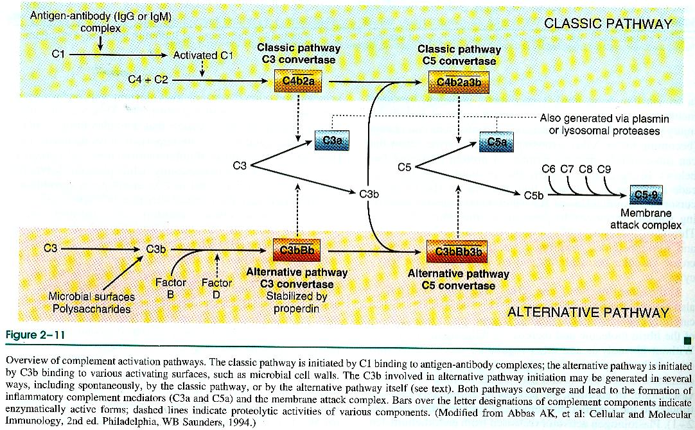
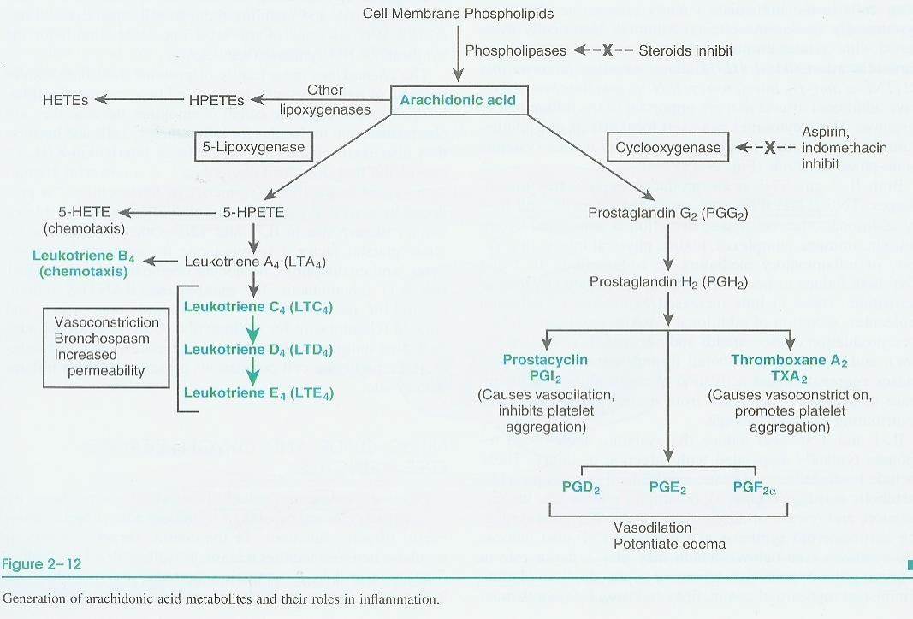
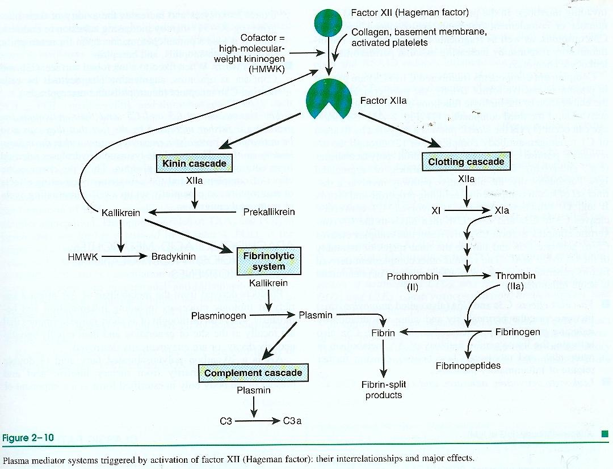

An inflammatory mediator is a chemical substance that mediates the
occurrence and progression of inflammation. Mediators are exogenous (bacteria and their
products) or endogenous, and endogenous ones are further split by origin into
cell-derived and plasma-derived.

Histamine is stored preformed in mast-cell and basophil granules (and in platelets) and is
released within seconds of a stimulus, causing arteriolar dilation and increased venular permeability
by endothelial contraction; it is inactivated quickly by histaminase, which is why its effect is so
short-lived. Serotonin (5-hydroxytryptamine, 5-HT) is stored in platelets and in argyrophil
cells of the gastrointestinal tract and produces a similar effect.
Arachidonic acid (AA) is cleaved from membrane phospholipids by phospholipase A2 and metabolized
down one of two enzymatic routes, each blocked by a different, clinically important class of drug.

COX has two isoforms: COX-1 (constitutive, gastric/renal protection) and COX-2
(inducible at sites of inflammation), which is why selective COX-2 inhibitors spare the
stomach.
Do not say "aspirin blocks arachidonic acid production": it blocks only cyclooxygenase, one branch
of two. Steroids are the ones that block phospholipase A2 and shut down both branches.
| Mediator | Source | Action |
|---|---|---|
| Cytokines (TNF-α, IL-1, IL-6) | Polypeptides, chiefly from activated lymphocytes and macrophages | Modulate the function of other cells; systemic effects (fever, acute-phase response) |
| Platelet-activating factor (PAF) | A phospholipid-derived mediator from leukocytes, endothelium, and platelets | Aggregates platelets and causes their degranulation |
| Nitric oxide (NO) | Endothelium and macrophages | Vasodilation; microbicidal in activated macrophages |
Three plasma protein systems, complement, kinin, and coagulation, are not independent: all three
are triggered together when activated Factor XII (Hageman factor) meets collagen, basement membrane,
or activated platelets at a site of injury.

| Pathway | Trigger | Shared endpoint |
|---|---|---|
| Classical | Antigen–antibody (IgG or IgM) complex activates C1 | C3 convertase → C3a + C3b; C5 convertase → C5a + C5b; C5b initiates the membrane
attack complex (C5b-9), which lyses the target cell |
| Alternative | C3b binds microbial surfaces/polysaccharides directly, stabilized by properdin |
C3a and C5a are anaphylatoxins: they trigger mast-cell histamine release and so increase
vascular permeability indirectly; C5a is additionally a direct chemotactic agent for neutrophils, and
C3b is an opsonin. One family of proteins therefore contributes to permeability, chemotaxis, and
phagocytosis all at once.
| Effect | Mediators |
|---|---|
| Vasodilation | Prostaglandins, nitric oxide |
| ↑ vascular permeability | Vasoactive amines; C3a and C5a (via amine release); bradykinin; leukotrienes C4, D4, E4; PAF |
| Chemotaxis, leukocyte activation | C5a; leukotriene B4; bacterial products; chemokines (e.g. IL-8) |
| Fever | IL-1, IL-6, TNF-α; prostaglandins |
| Pain | Prostaglandins; bradykinin |
| Tissue damage | Neutrophil and macrophage lysosomal enzymes; oxygen metabolites; nitric oxide |